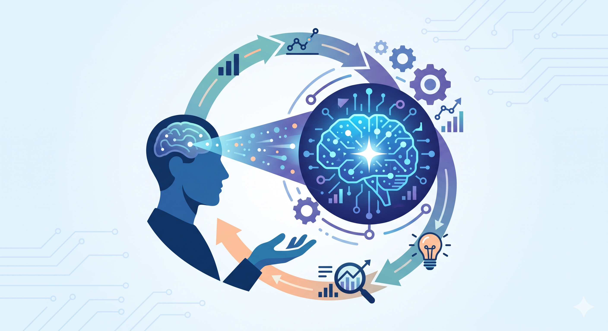
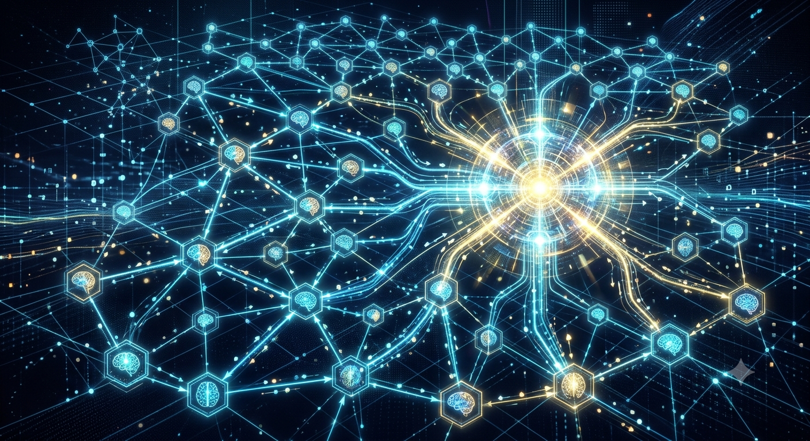
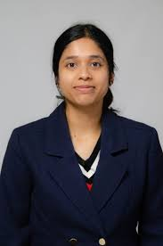
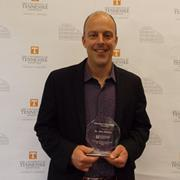
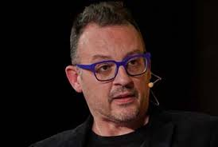

A Half-Day Workshop at the ACM Collective Intelligence Conference (CI 2026)
Submission Deadline: July 31, 2026
Scientific communities have long functioned as collective intelligence systems that aggregate expertise, evaluate evidence, and generate new knowledge. As humans and AI increasingly participate in shared systems of knowledge production, fundamental questions emerge about how science will evolve.
Because science functions as a collective intelligence system, understanding these transformations requires both HCOMP perspectives on human–AI complementarity and CI perspectives on distributed cognition. This workshop examines changes at multiple scales: from daily knowledge work and research practice, to scientific communication, to broader questions about the future evolution of collective intelligence in human–AI knowledge systems.

How are AI systems changing the conduct of research, including hypothesis generation, data analysis, coding, and the division of labor between human and machine contributors?
How is AI reshaping the creation, dissemination, evaluation, and interpretation of scientific knowledge?

How do hybrid human–AI communities aggregate information, coordinate expertise, build consensus, and solve complex problems?
How might AI transform the future evolution of science, collective intelligence, and human knowledge systems?
To align with the main conference early registration, please note the following deadlines:
Note: All deadlines are 11:59 PM Anywhere on Earth (AoE).
This workshop is proudly hosted in conjunction with the joint AAAI Conference on Human Computation and Crowdsourcing (HCOMP) and the ACM Collective Intelligence Conference (CI).
HCOMP is the premier venue for disseminating the latest research findings on crowdsourcing and human computation. Collective Intelligence (CI) is an interdisciplinary event that brings together researchers from academia, business, and other institutions to share insights and design frameworks for collective intelligence in its many forms.
By bringing this workshop to the joint conference, we aim to bridge perspectives from both communities to explore the rapidly evolving intersection of human and artificial intelligence.
This will be a half-day, hybrid workshop. Please note that all attendees are required to pay the Workshop registration fee.
| Time | Activity |
|---|---|
| 09:00 AM – 09:15 AM | Welcome and Framing Introduction by the organizers: What is the future of research as a human–AI collaboration? |
| 09:15 AM – 10:20 AM | Session 1: Knowledge Work, Communication, and Diffusion • Organizer: Chuanren Liu – Research Labor and Knowledge Work • Organizer: Alex Bentley & Senjuti Dutta – Scientific Communication and Knowledge Production • Invited: Sergi Valverde – Diffusion of knowledge, complex networks and the "science of science" |
| 10:20 AM – 11:00 AM | Coffee Break & Poster Session Accepted short papers/ extended abstract will present posters. |
| 11:00 AM – 11:55 AM | Session 2: Collective Cognition and Evolutionary Perspectives • Invited: Giordano De Marzo – Collective Cognition and the Social LLM Hypothesis • Invited: Ryan Boyd – Measuring Collective Cognition Through Language Data • Invited: Frederico Rossano – Collective Intelligence in Evolutionary Perspective |
| 11:55 AM – 12:45 PM | Research Strategy Lab Participants will form small-group roundtables to identify major research questions, datasets, methods, and collaboration opportunities. |
| 12:45 PM – 01:00 PM | Plenary Synthesis & Next Steps Reporting from roundtables, discussion of future collaborations, and roadmap development for the ACM TMIS special issue. |
This workshop invites empirical, theoretical, and methodological contributions examining the future of research as a human–AI collaboration. We particularly encourage submissions from HCI, AI, computational social science, business analytics, cognitive science, and evolutionary fields.
We welcome Short Papers (4–6 pages) and Extended Abstracts (2 pages).
Accepted authors will present posters and participate in the Research Strategy Lab, contributing to a public-facing roadmap report and potential follow-on publications in an upcoming ACM TMIS special issue on related topics.

University of Colorado Boulder

University of Tennessee, Knoxville
University of Tennessee, Knoxville

Institute of Evolutionary Biology
University of Konstanz
University of Texas at Dallas
University of California, San Diego